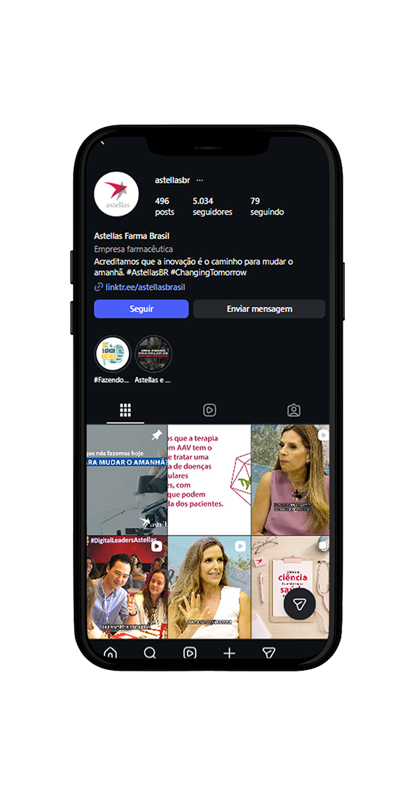
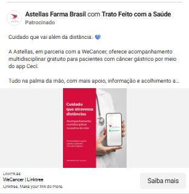
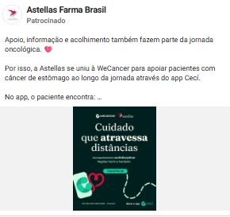
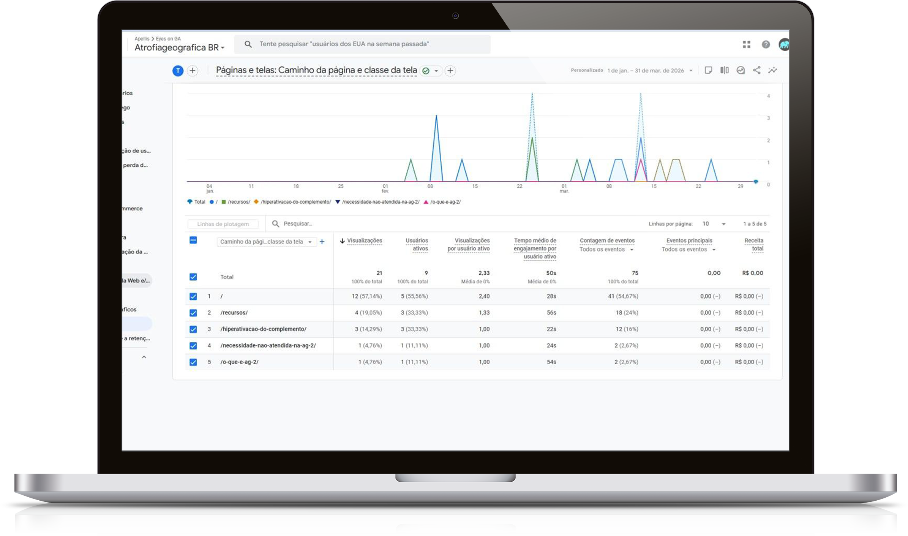

É o estudo inicial que nos permite entender o atual estágio da presença digital da sua empresa.
Além disso, é a base para traçarmos o mapa de estratégias a serem adotadas para alcançar o seu objetivo, que é de estabelecer o site Atrofia Geográfica e a Apellis como principais fontes de informações sobre a doença Atrofia Geográfica no Brasil.
No diagnóstico é apresentado:
O concorrente analisado foi:
➔ Astella — com o medicamento Izervay
A Atrofia Geográfica é uma marca praticamente inexistente nas mídias digitais do Brasil, no momento possui apenas um site.
A Apellis não possui nenhuma mídia no Brasil, apenas mundial.
A concorrente Astella possui algumas mídias no Brasil, mas ainda muito discretas.
Abaixo um resumo de como são as redes sociais das marcas da Apellis (cor laranja) e da Astellas (cor azul).
| Redes sociais | Atrofia Geográfica | Syfovre | Apellis | Izervay | Astellas |
|---|---|---|---|---|---|
| Não possui | Mundial | Não possui | Mundial | Brasil | |
| Não possui | Não possui | Não possui | Não possui | Brasil | |
| Não possui | Mundial (inativo) | Mundial | Mundial | Mundial | |
| YouTube | Não possui | Não possui | Mundial | — | Brasil |
Nos próximos slides vamos avaliar o trabalho feito pela Astellas, pois é a única marca que possui redes sociais no português do Brasil.

Cuidado que vai além da distância. 💙
A Astellas, em parceria com a WeCancer, oferece acompanhamento multidisciplinar gratuito para pacientes com câncer gástrico por meio do app Cecí.
Tudo na palma da mão, com mais apoio, informação e acolhimento a...

Apoio, informação e acolhimento também fazem parte da jornada oncológica. 💙
Por isso, a Astellas se uniu à WeCancer para apoiar pacientes com câncer de estômago ao longo da jornada através do app Cecí.
No app, o paciente encontra: ...

Falar sobre menopausa é ampliar o cuidado com a saúde da mulher. Por isso, a Astellas promove a live "Pausa & Prosa", um espaço de diálogo e acolhimento sobre uma fase que vai muito além dos sintomas físicos.
Com a presença da jornalista Mariana Ferrão e das médicas Ana Soggia (endocrinologista) e Luciana Taliberti (ginecologista), a roda...

acessos nos últimos 3 meses
Como podemos ver, foram apenas 21 acessos nos últimos três meses, o que mostra que provavelmente apenas as pessoas da empresa acessaram.
| Critério | Atrofia Geográfica | Astella |
|---|---|---|
| Possui Blog? | Não | Possui apenas site em inglês e no domínio .com |
| Nota sobre o SEO das páginas | 2 | — |
| As páginas utilizam corretamente as heading tags? | Não | — |
| As páginas possuem meta título? | Sim, com ressalvas | — |
| As páginas possuem meta descrição? | Sim, com ressalvas | — |
| Imagens possuem Tag Alt? | Algumas | — |
| Imagens possuem título? | Não | — |
| Nota sobre as Top 50 palavras-chaves que mais geram tráfego orgânico | 1 | — |
| Estão ranqueados em palavras-chaves que levam a marca? | Sim, com ressalvas | — |
| Estão ranqueados em palavras-chaves dos produtos/serviços? | Sim, com ressalvas | — |
| Aparecem na Zona de Cliques em palavras-chaves da marca? | Não | — |
| Aparecem na Zona de Cliques em palavras-chaves de produtos/serviços? | Não | — |
| Faz trabalho de link building? | Não | — |
| Quantos backlinks apontam para o site? | Zero | — |
| O site é responsivo? | Sim | — |
| O site apresenta boa performance em termos de velocidade? | Sim | — |
| Critério | Resultado |
|---|---|
| É possível atualizar com facilidade as headlines de cada página? | Sim |
| É possível alterar com facilidade textos no geral? | Sim |
| É possível alteração de banners com facilidade? | Sim |
| Em termos de rastreabilidade, o sistema permite integração para rastreio de UTMs? | Sim |
| O sistema permite fácil criação de páginas de "Obrigado" para instalação de eventos de conversão? | Sim |
Rastreio por UTM: Trata-se de um conjunto de parâmetros (códigos UTM) adicionados após a URL para identificar a fonte exata do tráfego gerado para as páginas internas.
Mapeamento de SEO (Search Engine Optimization) Google.
Mapeamento GEO (Generative Engine Optimization).
Criação das seguintes redes sociais no idioma português do Brasil:
| Ano | Instagram & Facebook | LinkedIn * | YouTube * |
|---|---|---|---|
| 2026 | Da marca Atrofia Geográfica | Da marca Atrofia Geográfica | Da marca Atrofia Geográfica |
| 2027 | Da marca Apellis, após lançamento no Brasil | — | — |
O LinkedIn e YouTube são ferramentas muito estratégicas para GEO.
Publicações de conteúdos científicos. No LinkedIn utilizar a ferramenta própria de publicação de artigos.
Conteúdo educativo sobre a doença e prevenção.
Fazer parcerias com médicos para eles produzirem conteúdos em parceria com a marca Atrofia Geográfica.
Sugerimos investir nas plataformas de Meta Ads e YouTube Ads para potencializar a disseminação de conteúdo informativo/educativo produzido pela Atrofia Geográfica, e assim gerar mais visibilidade e autoridade para a marca.
| Meta Ads | YouTube Ads | |
|---|---|---|
| Objetivos | Awareness e engajamento | Awareness e engajamento |
| Investimento mensal | R$ 900,00 | R$ 600,00 |
| Distribuição | 80% ganho de audiência / 20% engajamento | 50% ganho de audiência / 50% visualizações |
| Público | Médicos — Brasil inteiro | Médicos — Brasil inteiro |
O objetivo principal com o site é aparecer organicamente, ou seja, sem pagar, nas primeiras posições dos buscadores tradicionais (Google, Bing…) e nas citações das AIs (ChatGpt, Gemini…). Para isso sugerimos:
Confira o fluxograma completo com todas as ações, fases e prioridades da estratégia sugerida.
Clique aqui e confira o Mapa da Estratégia →Diagnóstico Ground Zero · ODC — Apellis